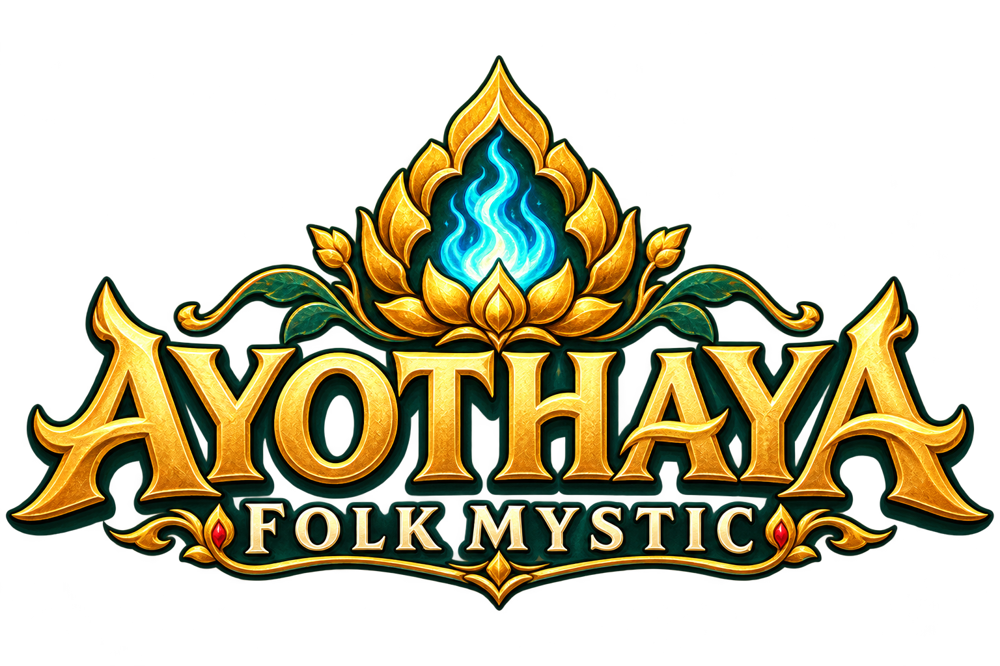
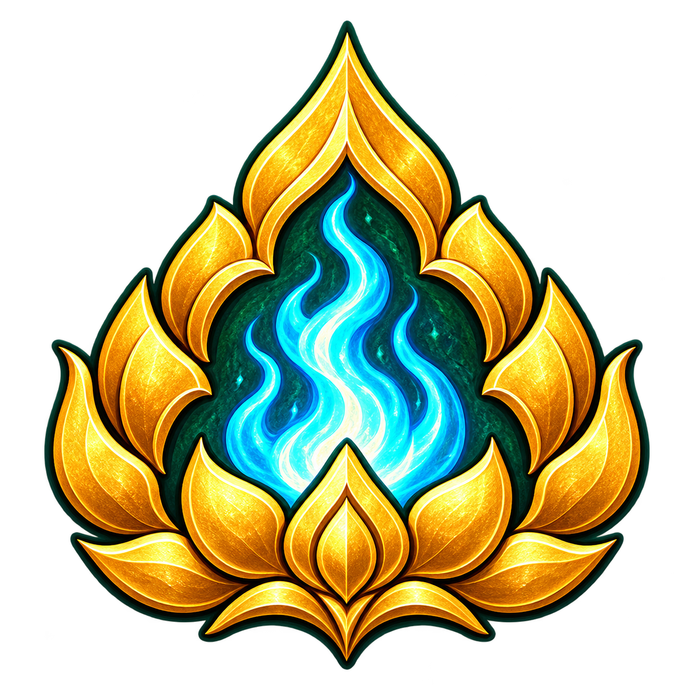

THAI FOLK FANTASY · ONLINE RPG

ใต้ร่มไทร ริมสายน้ำ
ตำนานบทต่อไป… เป็นของคุณ
เล่นฟรีบนเบราว์เซอร์ผจญภัยกับเพื่อน7 อาชีพ · สาย Master

AYOTHAYAFOLK MYSTICTHAI FOLK FANTASY · ONLINE RPG

ใต้ร่มไทร ริมสายน้ำ
ตำนานบทต่อไป… เป็นของคุณ
YOUR STORY BEGINS HERE
โลกของตำนานไทยและมิตรภาพ
พร้อมให้คุณออกเดินทางแล้ว
ผูก Google ภายหลังได้ · ตัวละครอยู่ครบ
การเล่นออนไลน์ต้องยอมรับ ข้อกำหนดการใช้บริการ และ นโยบายความเป็นส่วนตัว
A WORLD TO CALL HOME
พบกันที่ริมเจ้าพระยา
การผจญภัยและเพื่อนร่วมทางรออยู่
สร้างได้ 5 ตัวละครต่อบัญชี
สลับแชนแนลในเกมได้ตลอดเวลา
YOUR JOURNEY CONTINUES
กลับไปพบเพื่อน และเขียนตำนานบทต่อไป
กำลังเชื่อมต่อบัญชี…